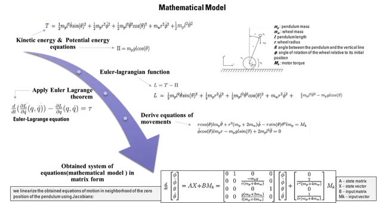
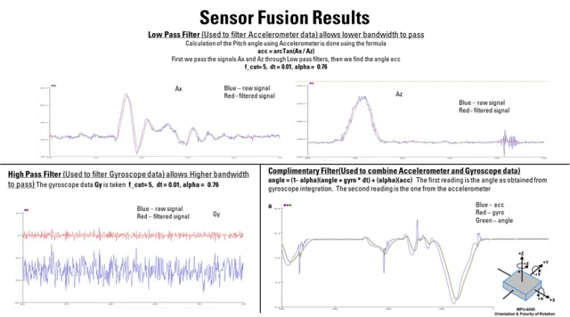
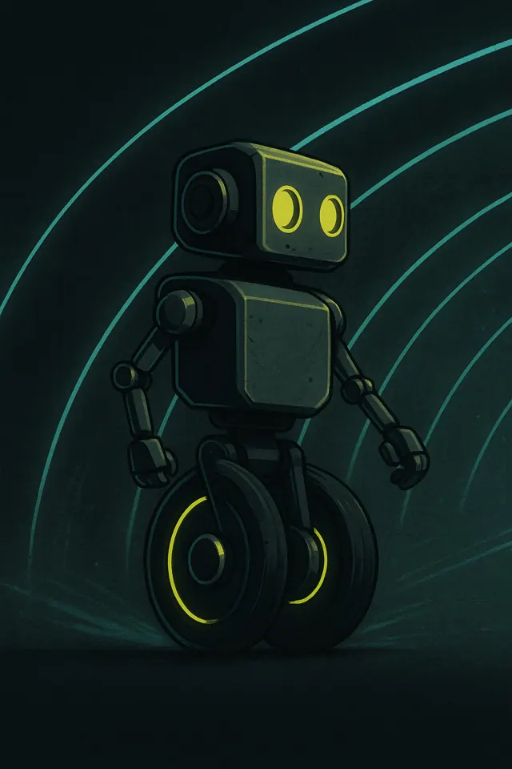
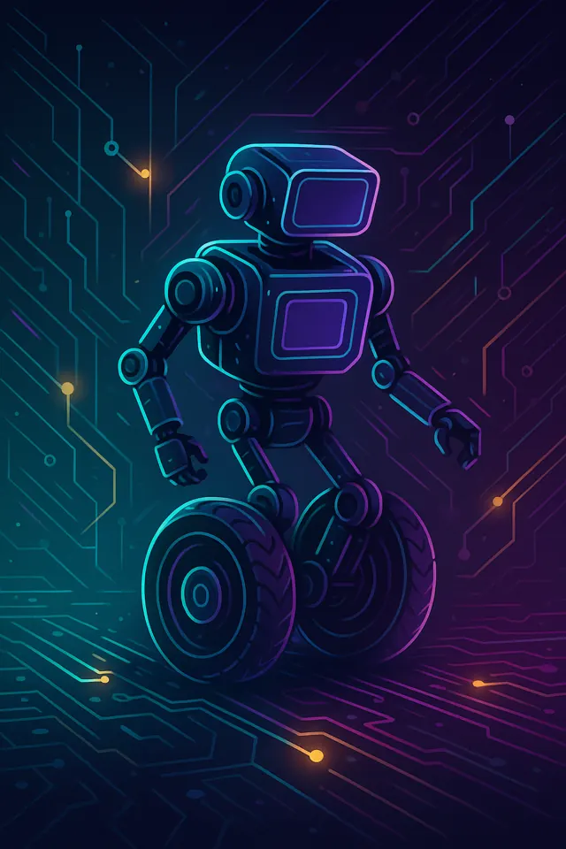

two wheels, one impossible posture — control theory you can poke
SPEC: IMU + wheel encoders · complementary filter · PID torque control · C++A two-wheel inverted pendulum built as a hands-on platform for control theory — the classic "unstable by design" problem, solved with sensor fusion and tight feedback loops.




Maintained upright posture and navigated obstacles — a tangible platform for experimenting with control theory, later feeding into biped locomotion experiments.
NEXT_PROJECT // MED-TECH Retina AI